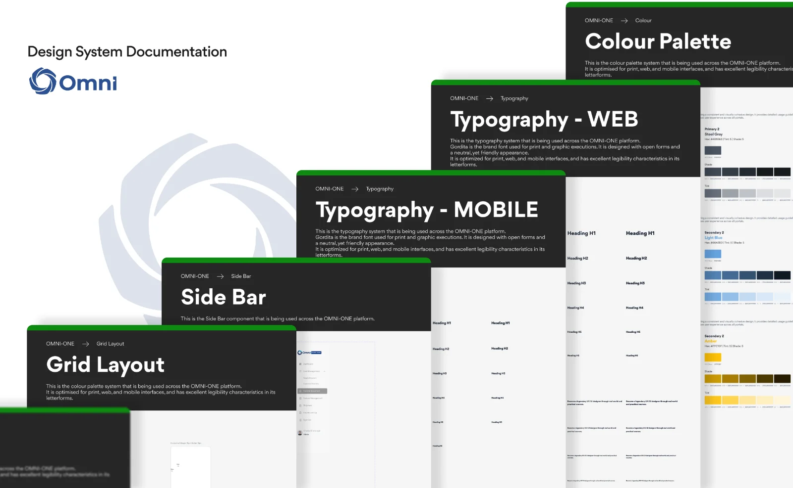
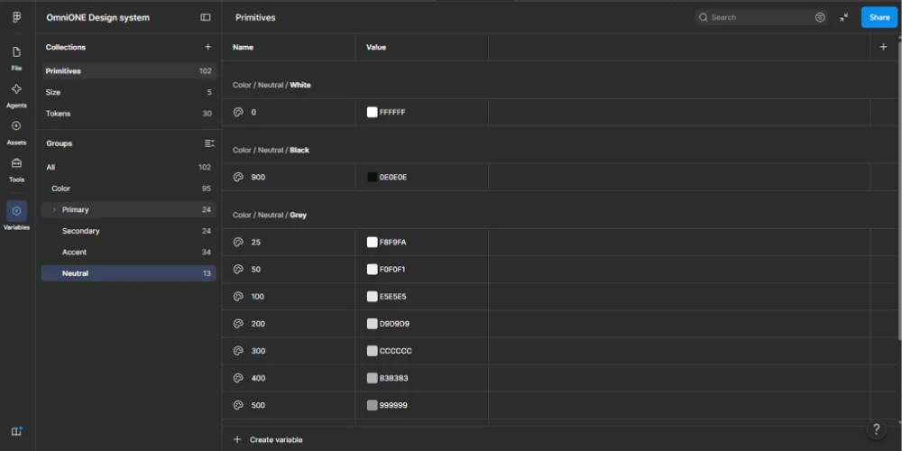
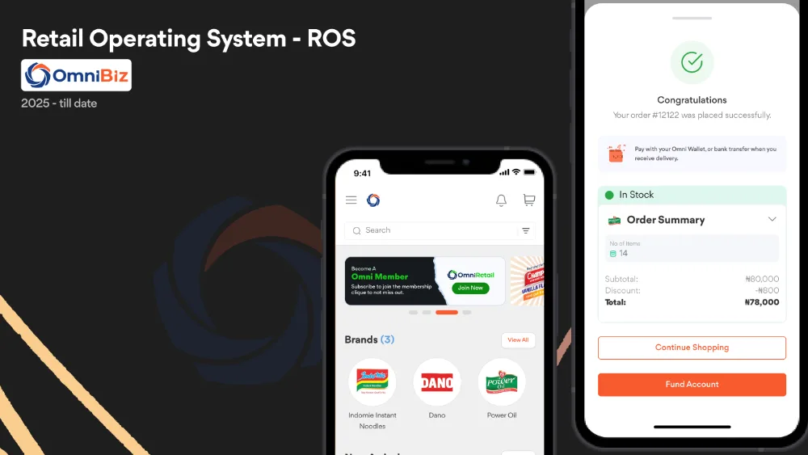
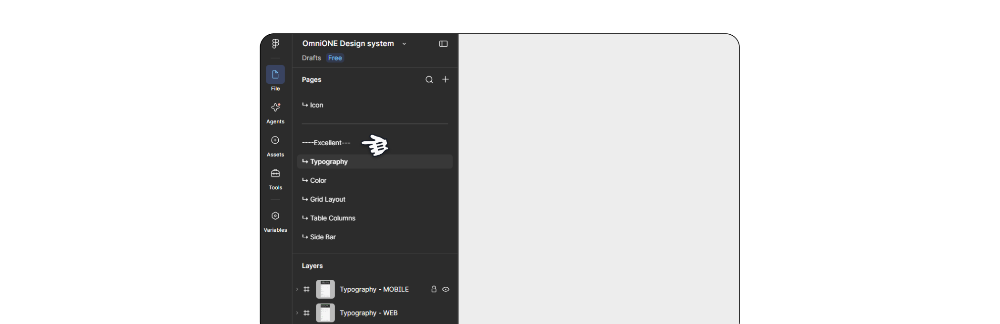
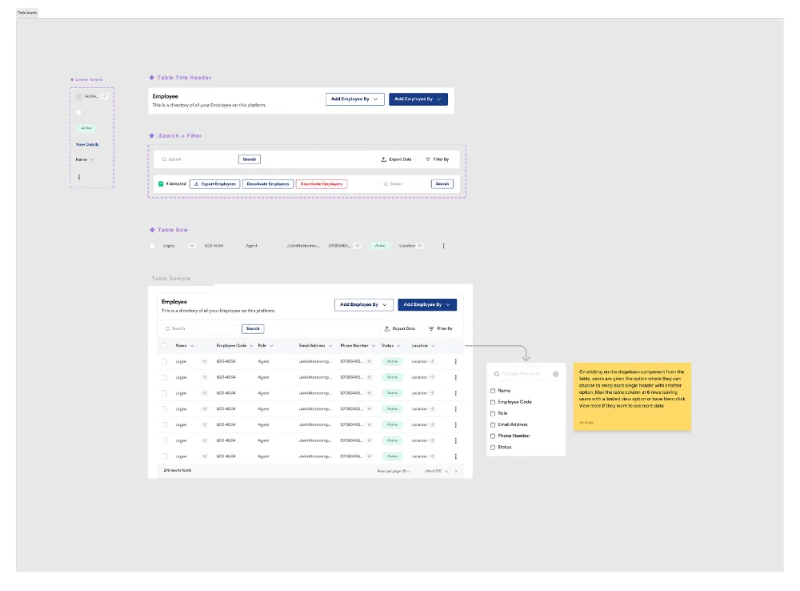
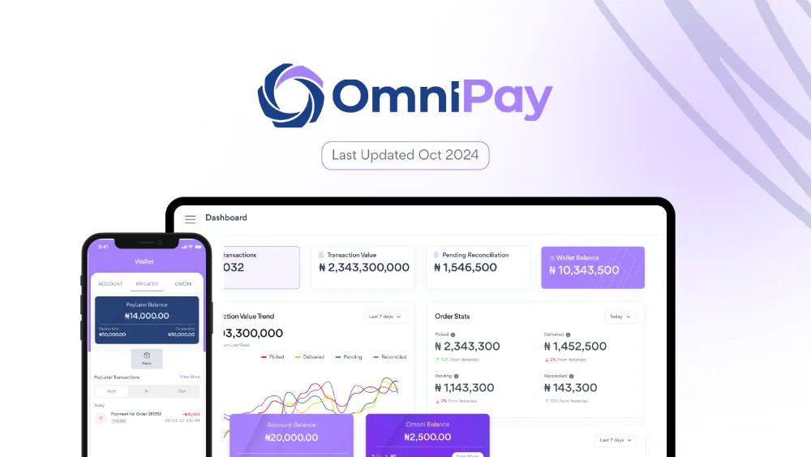
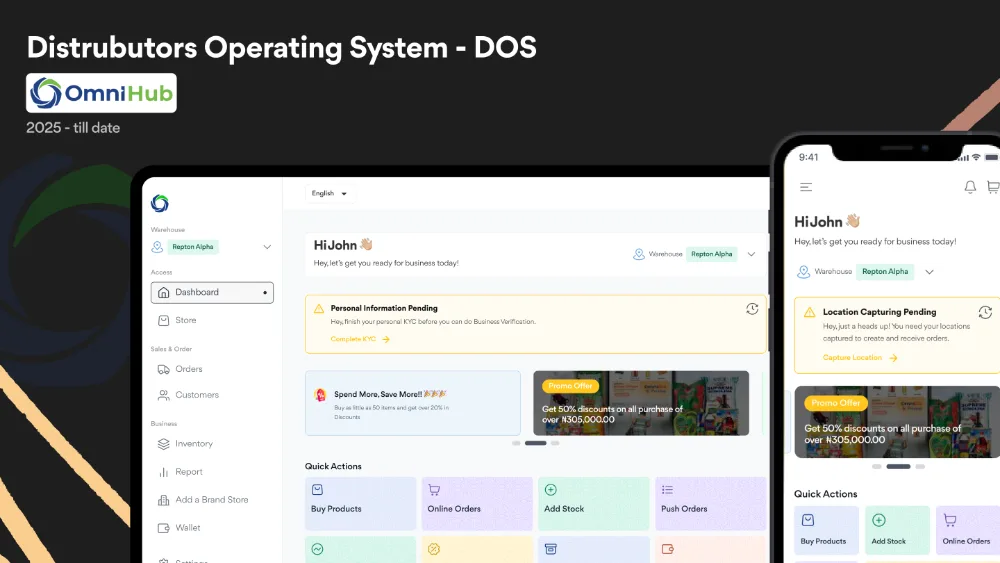
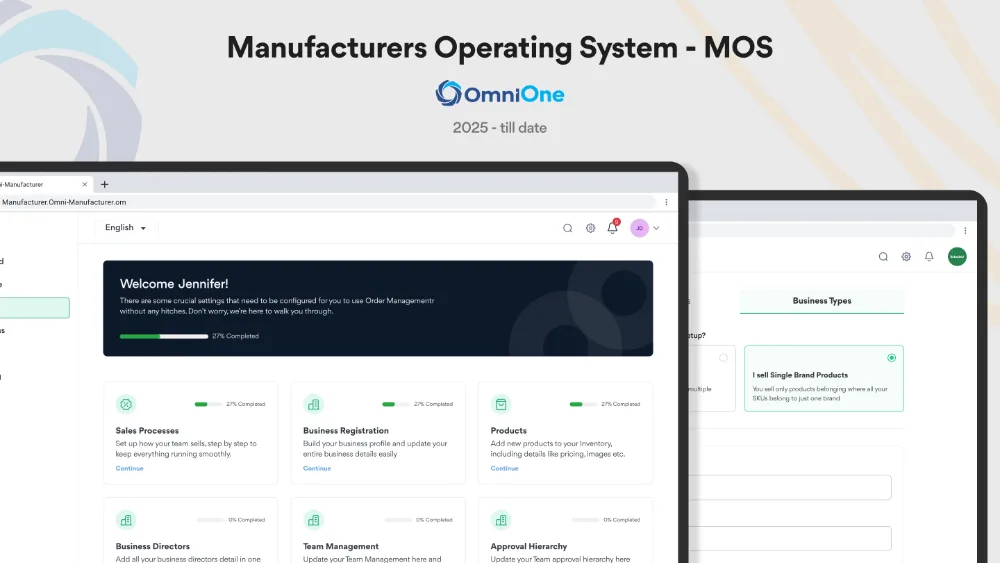
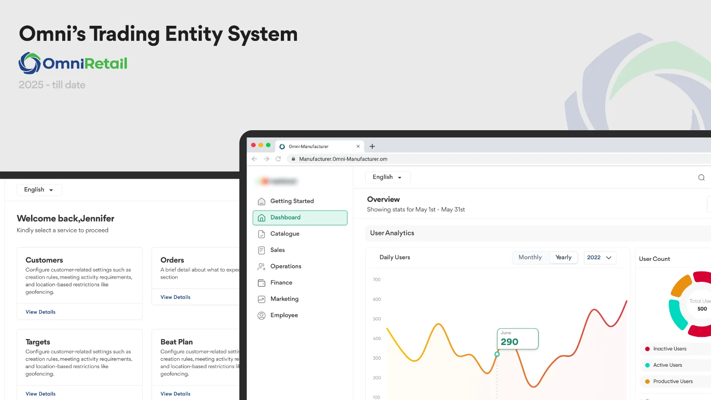

OmniRetail · Senior Product Designer & Design Manager · Shipped · 2024
Building one design language for four product teams
By 2024, OmniRetail's design work had split across four product teams: Retail (Omnibiz), Distribution (OmniHub), Manufacturer (OmniOne) and Payments (Omnipay), each shipping on its own timeline, with its own interpretation of what a "primary button" should look like. Omnione is the design system I helped build to give all four one shared language, without slowing any of them down.
I led Retail Design at OmniRetail and contributed to the shared Omni design system. My personal scope inside Omnione was the foundation layer: colour, typography, grid, table rows and columns, and the sidebar. Those were the pieces every other designer built their own library section on top of, which is why the ordering mattered as much as the components.
Summary
Omnione gave them one component library and a two-tier token system that each team could pull from at its own pace. I worked with engineering on the tokens behind the code library. The system shipped in phases: tokens, then components, then adoption.
Role
Senior Product Designer & Design Manager. Foundation layer and table columns
Team
Four product design teams and their engineers, across Retail, Distribution, Manufacturing and Payments
Timeline
2024
Scope
Shared system for Omnibiz, OmniHub, OmniOne, Omnipay and the internal trade entity tool
Evidence
Library counts from the Figma file. Outcome figures are team estimates
Status
Shipped and in use
Impact
See Outcome ↓The four and the library counts are counted directly from the shipped Figma file. The handoff figure is a team estimate from 2024, and its baseline and method were never documented, which is why the outcome section treats it as a claim rather than a measurement.
Token system
2-tier
Foundation tokens feeding semantic, usage-level tokens.
Components
60+
Built and documented in the shared library.
Variants
2,300+
Every component variant in the file: states, sizes and product-specific needs. A library count, not an adoption number.

Problem
After a successful fundraising, OmniRetail grew from one product surface to four, and each team staffed its own design function. Four teams meant four interpretations of the same interface. The cost was not only visual. It showed up in rebuilt components, inconsistent engineering specs, and users learning the same pattern twice in two products.
Divergent visual language
Every surface had shipped its own buttons, spacing scales, and component behaviour, because each was built independently under deadline pressure.
Rebuilding basics
Every new screen meant rebuilding basic UI from scratch, because there was nothing shared to pull from.
Inconsistent handoff
Engineers received slightly different specs for the same "component" depending on which designer built the screen, creating avoidable back-and-forth.

What made it a system problem and not a style problem. The teams were not disagreeing about taste. They were each solving the same problem from scratch, in parallel, with no way to see that the work had already been done next door. A style guide would have documented the disagreement. What was missing was a dependency order, so a designer on Omnipay could build on something stable instead of waiting for the Retail team to finish.
My role & constraints
I led Retail Design at OmniRetail and contributed to the shared Omni design system rather than authoring all of it. My scope inside the library was the foundation layer and the table column system. Other designers owned their own sections on top of that foundation, and engineering owned the code library that the tokens fed.
Pattern audit
Auditing existing UI patterns across the four product surfaces to find what was already duplicated or diverging, before anything new was drawn.

Foundation layer
Owning the foundation layer (colour, typography, grid, table rows and columns, and the sidebar): the pieces every other designer had to build their own library section on top of.
Atomic structure
Structuring the system on atomic design (Foundation, Atoms, Molecules, Organisms, Templates) so the dependency order let four teams build in parallel instead of blocking on each other.

2-tier tokens
Defining a 2-tier token system (foundation tokens for raw values, semantic tokens for usage) so colour, spacing, and type could update from one source.
Table column system
Designing the table column system: variants for text, status labels, leading icons, avatars, icon-only, title style, sortable headers and row actions, all extended as new use cases surfaced across the teams.

Engineering handoff
Working directly with engineers to define the Figma variables they built tokens from, so the system matched in the browser, not just in Figma.
The constraint that shaped the work was not craft. It was that four teams were already mid-delivery and none of them could stop to wait for a system. Anything that required a freeze would have been rejected in the room, so the plan had to be adoptable one section at a time.
Key decisions
Three decisions shaped the system. Each one cost something visible, and each is the reason the library survived contact with four delivery timelines.
01 · Settle tokens before components
The token structure came first, then components were composed against it. Token work is invisible progress compared with a new component set, and that was the argument I had to make repeatedly.
Trade-off: weeks of work with nothing demoable, while stakeholders asked to see screens. Had we started with components, every one of them would have needed rebuilding the moment the tokens landed.
02 · Build the foundation myself, distribute the rest
I kept colour, type, grid, tables and the sidebar as one owned piece, and let each team own its own library section above it. One person holding the foundation kept it coherent while four teams moved.
Trade-off: it made me a bottleneck for foundation changes. I accepted that for the first phase, then opened the contribution path once the base was stable.
03 · Ship a contribution path, not a locked library
The library shipped with a lightweight way for other designers to propose new components instead of forking the system.
Trade-off: an open library needs review, and review costs time. The alternative was a locked file that teams route around, which is how the original divergence started.
The decision I would revisit
I sequenced the system for craft quality, and I under-invested in adoption evidence. There was no per-team measure of how much of each product was actually built on Omnione, so the outcome story rests on library counts and a handoff estimate rather than on usage. If I ran it again I would instrument adoption from the first release, because a system's real health is how much of the product is built with it, not how many components exist in the file.
Design
The work ran in four phases: audit, define, build, adopt. The order is the design decision. Each phase produced something the next phase could stand on, and nothing shipped to the teams before the layer underneath it was stable.
- 01 Audit Catalogued existing patterns and duplication across the four product teams.
- 02 Define Settled the token structure first, then validated it against real screens from each surface.
- 03 Build Composed the library in phases: primitives first, then patterns, piloting each on one surface before rolling out.
- 04 Adopt Partnered with engineering on the code library, then set up governance so the system kept growing without me gatekeeping it.

A single component library, structured so each team could keep moving at their own pace while pulling from the same foundation. Tokens first, components second, adoption third, in that order, because the order is what made it survivable.
Tokens first
Audited existing patterns across the Retailer App, Omnipay, and internal tools to find what was already duplicated or diverging. Defined a token structure (colour values, semantic tokens for usage, type scale, spacing, and elevation) so the foundation could update in one place.
Components second
Built and documented the component library in Figma, from primitives (buttons, inputs, tags) through composed patterns (cards, tables, empty states).
Adoption third
Worked directly with engineers to translate tokens into code, so the system matched in the browser and not just in Figma. Set up a lightweight contribution process so other designers could propose new components without forking the system.
Where the table column system came from. Tables were the one pattern every surface needed and every team had solved differently. Retail needed sortable headers and row actions, Distribution needed status labels and leading icons, Manufacturing needed avatars and title styles. Rather than design four tables, the column became the unit: each variant a piece that any team could assemble into its own table without inventing a new pattern.
Outcome
Two kinds of number appear here, and they are not the same kind of evidence. Library counts come from the file itself. Adoption and speed figures come from the team, without a documented baseline.
Teams unified
4
Counted
Retail, Distribution, Manufacturer and Payments on one shared language. Counted as the teams onboarded to the library, not as a per-team adoption rate.
Handoff time
−40%
Reported · team estimate
Reduction in design-to-engineering handoff once teams built against tokens. Reported by the team in 2024. The baseline, sample and method were not documented, so treat it as a claim.
Components
60+
Counted in Figma
Documented components in the shared library, counted from the shipped file.
Variants
2,300+
Counted in Figma
Every component variant in the file, across states, sizes and product-specific needs. A library count, not a measure of usage.
What this does not show
It does not show per-team adoption, because nobody instrumented how much of each product was actually built on Omnione. It does not show that the rebuild cycle ended, so that claim is removed rather than restated: the library reduced duplicated work, but I cannot prove it went to zero. The 2,300 figure counts variants in a file, which is a measure of breadth, not of quality or use. And the handoff estimate has no baseline, so it belongs in a conversation, not in a spreadsheet.
The surfaces it had to serve
OmniRetail isn't one app. It's an operating system for each side of the trade (retail, distribution and manufacturing), plus the payment rail underneath and the internal tool that administers all three. Any design system here had to serve four teams whose users have almost nothing in common except the data flowing between them.
Omni
Single Sign On

Retail team
Omnibiz App · ROS
Distribution team
OmniHub · DOS

Manufacturer team
OmniOne · MOS

Payments team
Omnipay App
Plus the internal tool
Trade Entity · internal management for ROS, MOS and DOS

Reflection
A design system is an agreement, not a file. The hardest part was never drawing the components. It was getting four teams to accept a shared constraint while each was under its own delivery pressure. What made it hold was sequencing and adoption, not craft: settling the foundation first so nobody was blocked, giving engineering tokens instead of screenshots, and leaving a contribution path open so the system could absorb new needs rather than be worked around. A library nobody can extend gets forked; one that's easy to contribute to gets defended by the people using it.
The part I would do differently is measurement, not design. I can show what was built and who adopted it, but I cannot show what it saved, because adoption was never instrumented and the handoff figure was an estimate. Next time the success measure would be set on day one: the share of new screens built from the library, and the time from design handoff to a merged component.
Next tests

Instrument adoption
Measure the share of new screens built from the library per team, so the system's health is visible without asking a designer.
Set a handoff baseline
Time one handoff before and after the tokens land, on the same component, so the speed claim has a method behind it.
Audit drift yearly
Check each surface for local overrides, since divergence returns quietly once a system is no longer being maintained.
Other projects